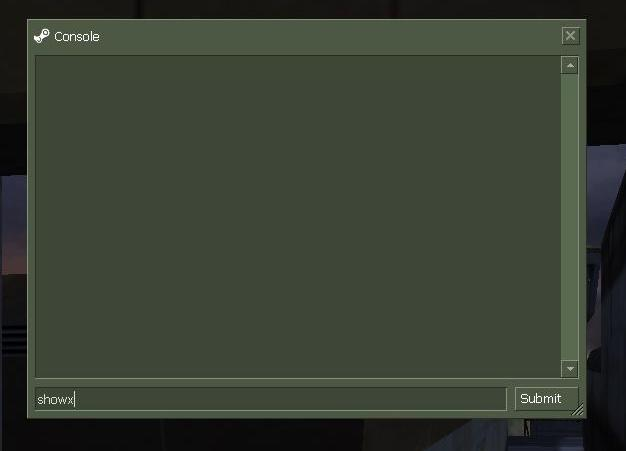
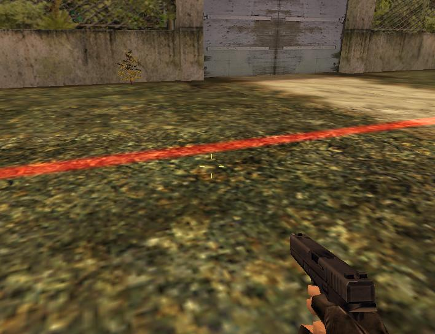

|
This section will explain to you how to use the showx, showy, and showz commands in Ent Mod:
Command Use:
First, you will need to enter the command in the console:

In the picture above you can see the entered showx command, after entering the command press enter then close the console and look around you to see the line:

Here, you can see that after closing
the console and looking around, the line points in the positive x direction in the
map.
The same as above is true for all three commands, showx, showy, and showz. The only difference will be the color of the line and the location of the line around you. This command is useful to find the x, y, and z axis in maps for use with other commands, such as e_stack. Note: It is best if you close the console and find the line without moving because the line points in the positive direction of the axis command you used. This can also be helpful in the use of other Ent Mod commands.
This example was done with the Counter Strike mod but this example holds true for all Half-Life mods. |